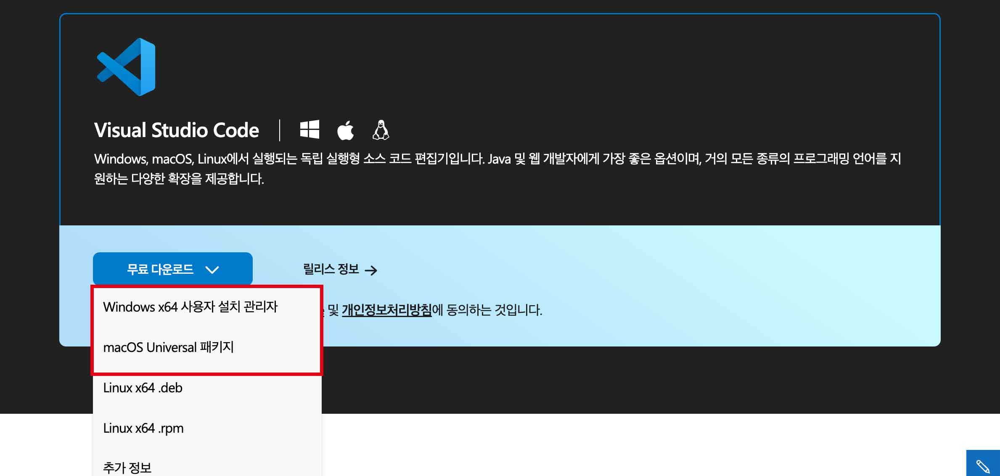
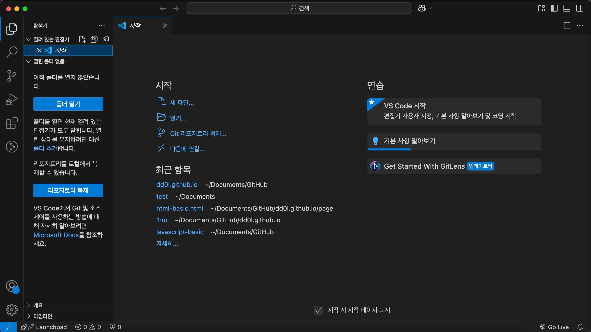

비주얼 스튜디오(Visual Studio) 설치방법
1. 비주얼 스튜디오 다운로드 및 설치
https://visualstudio.microsoft.com/ko/downloads/ 또는 구글검색창에 '비주얼 스튜디오' 검색

Python, Java, Java Script, TypeScript, Node.js, HTML, CSS등 다양한 언어를 사용하여 작업할 수 있습니다.
해당되는 운영OS에 따라 선택하시면, 자동으로 다운로드되며 압축해제 후 바로 사용가능 합니다.
2. 비주얼 스튜디오 기본화면
이 상태에서도 충분히 사용가능하지만,
다음 페이지에서는 좀 더 개발생활을 편하게 할수있는 다양한 확장프로그램을 알려드리겠습니다.